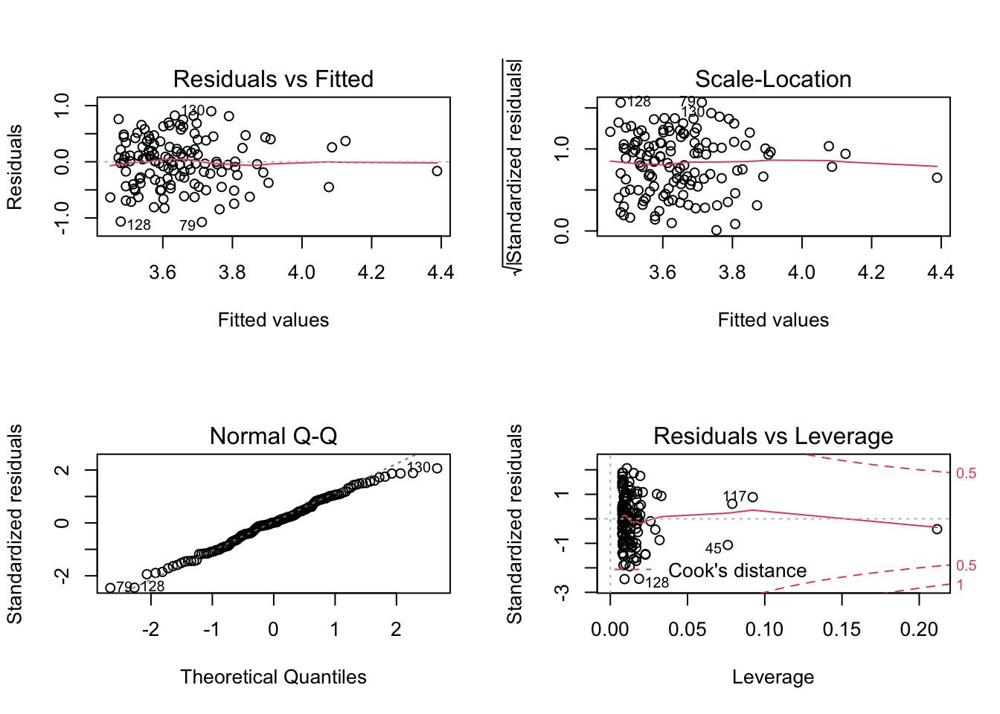
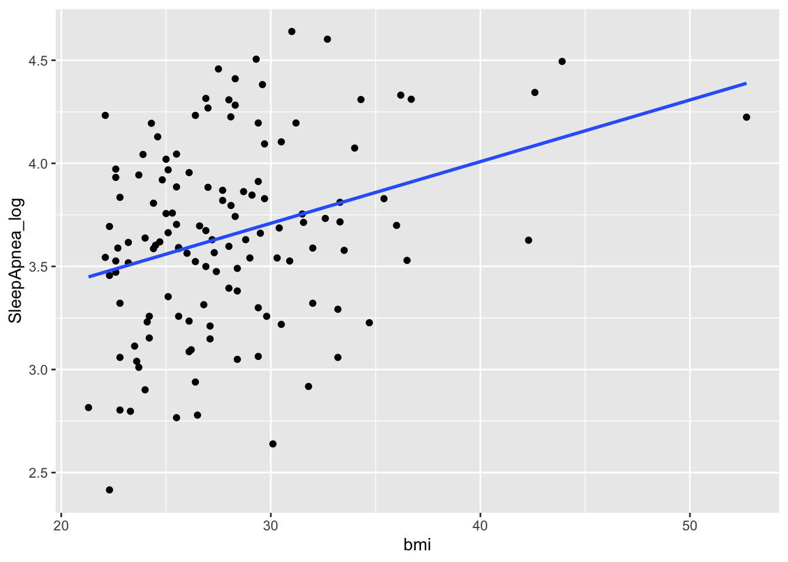

Chapter 7 Regression model
A regression model provides a function that describes the relationship between one or more independent variables and a response, dependent, or target variable.
7.1 Linear regression
7.1.1 Simple Linear regression
A simple linear regression model fits a linear relationship between one independent variable and a response or dependent variable.
Let’s look at sleep apnea (log transformed) and its covariate to assess any relationship.
R
In R the short for linear model is the lm() function. Here we try to fit a linear relationship between the sleep apnea (log transformed) and the body mass index (bmi) of the patients.
m1 <- lm(SleepApnea_log ~ bmi, data=sleep)
summary(m1)##
## Call:
## lm(formula = SleepApnea_log ~ bmi, data = sleep)
##
## Residuals:
## Min 1Q Median 3Q Max
## -1.07324 -0.30206 0.00409 0.34115 0.90036
##
## Coefficients:
## Estimate Std. Error t value Pr(>|t|)
## (Intercept) 2.812163 0.227609 12.355 < 2e-16 ***
## bmi 0.029905 0.008012 3.733 0.000285 ***
## ---
## Signif. codes: 0 '***' 0.001 '**' 0.01 '*' 0.05 '.' 0.1 ' ' 1
##
## Residual standard error: 0.4384 on 127 degrees of freedom
## (1 observation deleted due to missingness)
## Multiple R-squared: 0.09886, Adjusted R-squared: 0.09176
## F-statistic: 13.93 on 1 and 127 DF, p-value: 0.0002848When the bmi increases by 1 unit the log of the sleep apnea increases by 0.03. This coefficient is statistical different from 0 (p-value = 0.0002). Although the \(R^2\) or coefficient of determination is rather small: only 9% of the variation observed in the log apnea data is explained by the bmi.
7.1.1.1 post-hoc test
How to verify if a simple linear regression model was appropriate?
The method is descriptive and based on the distribution of the residuals that allows assessing:
- Linear and additive of predictive relationships
- Homoscedasticity (constant variance) of residuals (errors)
- Normality of the residuals distribution
- Independence (lack of correlation) residuals (in particular, no correlation between consecutive errors in the case of time series data)
R
In R we can use plots:
layout(matrix(c(1:4), nrow=2))
plot(m1)
dev.off()## null device
## 1From top to bottom and left to right the plots assess :
- Linearity and additivity of predictive relationships. A good fitting should show a red horizontal line, the variance of the residuals is randomly spread above and below the horizontal line.
- Homoscedasticity (i.e. constant variance) of residuals (errors). A good fitting should show a red horizontal line, the variance of the residuals is constant and do not depend on the fitted values.
- Normality of the residuals distribution. A good fitting should show a alignment of the dots on the diagonal of the Q-Q plot.
- Influential observations with Cook’s distance: if dots appear outside the Cook’s distance limits (red dashes) they are influential observations or even outliers (extreme). Their value need to be verified as they might negatively influence the fitting.
Globally, the fitting is not great. This could have been easily foreseen by a quick look at a xyplot.
library(ggplot2)
ggplot(sleep, aes(y=SleepApnea_log, x=bmi)) +
geom_point() +
geom_smooth(method = "lm", se = FALSE)
Stata
Similarly in Stata we can verify our assumptions:
// fitted values Vs residual
// for checking independence of residual
rvfplot, yline(0) The residuals are distributed independantly
// testing for Heteroskedasticity
estat imtestThe p-value is not less than 0.05 so the variance of the residuals is homogenous.
However as shown below, no the association between log SleepApnea and BMI is not linear, as the dotted points do not show any linear trends or regression line in the graph is not surrounded by observations.
scatter SleepApnea_Log bmi || lfit SleepApnea_Log bmi7.1.2 multivariate linear regression
A multivariate linear regression model fits a linear relationship between one independent variable and several response or dependent variables.
In our example let’s look at several covariates and adjust each of their effects along the way for better measurements of covariate’s effect.
R
In R a multivariate linear regression modelling is really similar to the simple linear regression
m2 <- lm(SleepApnea_log ~ bmi + age + gender +
creatinine, data=sleep)
summary(m2)##
## Call:
## lm(formula = SleepApnea_log ~ bmi + age + gender + creatinine,
## data = sleep)
##
## Residuals:
## Min 1Q Median 3Q Max
## -1.11154 -0.28626 0.00599 0.27501 0.86245
##
## Coefficients:
## Estimate Std. Error t value Pr(>|t|)
## (Intercept) 2.647637 0.424317 6.240 6.58e-09 ***
## bmi 0.032089 0.008246 3.891 0.000163 ***
## age 0.009445 0.003759 2.512 0.013302 *
## gendermale 0.219084 0.128036 1.711 0.089603 .
## creatinine -0.005881 0.003235 -1.818 0.071562 .
## ---
## Signif. codes: 0 '***' 0.001 '**' 0.01 '*' 0.05 '.' 0.1 ' ' 1
##
## Residual standard error: 0.4321 on 122 degrees of freedom
## (3 observations deleted due to missingness)
## Multiple R-squared: 0.157, Adjusted R-squared: 0.1294
## F-statistic: 5.681 on 4 and 122 DF, p-value: 0.0003157In the model, not all coefficients are statistically significant (ex gender). If your goal is to optimize the measure of each covariate’s effect, you might want to do a step approach which consists of removing the least significant covariate, redoing the test, and assessing if the model has “improve” etc.
m2.2 <- lm(SleepApnea_log ~ bmi + age +
creatinine, data=sleep)
summary(m2.2)##
## Call:
## lm(formula = SleepApnea_log ~ bmi + age + creatinine, data = sleep)
##
## Residuals:
## Min 1Q Median 3Q Max
## -1.06150 -0.27082 -0.00797 0.29607 0.86161
##
## Coefficients:
## Estimate Std. Error t value Pr(>|t|)
## (Intercept) 2.706391 0.426227 6.350 3.78e-09 ***
## bmi 0.030537 0.008260 3.697 0.000327 ***
## age 0.007797 0.003662 2.129 0.035260 *
## creatinine -0.003135 0.002831 -1.107 0.270300
## ---
## Signif. codes: 0 '***' 0.001 '**' 0.01 '*' 0.05 '.' 0.1 ' ' 1
##
## Residual standard error: 0.4355 on 123 degrees of freedom
## (3 observations deleted due to missingness)
## Multiple R-squared: 0.1368, Adjusted R-squared: 0.1157
## F-statistic: 6.497 on 3 and 123 DF, p-value: 0.0004067AIC(m2) ; AIC(m2.2)## [1] 154.1741## [1] 155.186The Akaike’s index helps identifying any model fitting improvement. The rule is that between 2 nested models the best one is the one with the lower AIC. In our example, the \(R^2\) is lower and the AIC did not improve. Thus you should go on…
You can perform automatic stepwise modelling but do not forget to be smart and interpret your output to see if it does make sense. Try below to test:
m_all<- lm(SleepApnea_log ~ ., data=sleep[, -c(1, 12, 19)])
summary(m_all)
best<- step(m_all)
summary(best)Stata
regress SleepApnea_log bmi age i.gender i.diabetes creatinineNote: From the code above that continuous independent variables are simply entered “as is,” whilst categorical independent variables have the prefix “i”
Backward selection, removing terms with p ≥ 0.05
stepwise, pr(.05): regress SleepApnea_log bmi age i.gender creatinine7.2 logistic regression
Logistic regression models are a generalization of the linear models.
R
In R the gml() family function, which stands for generalized linear model, can be used to fit different family of data distributions such as continuous outcome (gaussian), binary outcome (binomial) or counts (Poisson) with different link between the ouctome and the covariates (logit, probit …). See help page for more details.
##
## Call:
## glm(formula = apnea_high ~ bmi, family = binomial(), data = sleep)
##
## Deviance Residuals:
## Min 1Q Median 3Q Max
## -1.8897 -0.5000 -0.3917 -0.3173 2.2321
##
## Coefficients:
## Estimate Std. Error z value Pr(>|z|)
## (Intercept) -6.58190 1.60238 -4.108 4e-05 ***
## bmi 0.15529 0.05202 2.985 0.00283 **
## ---
## Signif. codes: 0 '***' 0.001 '**' 0.01 '*' 0.05 '.' 0.1 ' ' 1
##
## (Dispersion parameter for binomial family taken to be 1)
##
## Null deviance: 92.737 on 128 degrees of freedom
## Residual deviance: 82.779 on 127 degrees of freedom
## (1 observation deleted due to missingness)
## AIC: 86.779
##
## Number of Fisher Scoring iterations: 5As seen for the confidence interval, the epiDisplay library has a convenient function call for a nice display of classical logistic regression.
##
## Logistic regression predicting apnea_high : Yes vs No
##
## OR(95%CI) P(Wald's test) P(LR-test)
## bmi (cont. var.) 1.17 (1.05,1.29) 0.003 0.002
##
## Log-likelihood = -41.3894
## No. of observations = 129
## AIC value = 86.7788R
l2 <- glm(apnea_high ~ bmi + gender +
age + creatinine,
family=binomial(), data=sleep)
summary(l2)##
## Call:
## glm(formula = apnea_high ~ bmi + gender + age + creatinine, family = binomial(),
## data = sleep)
##
## Deviance Residuals:
## Min 1Q Median 3Q Max
## -1.5124 -0.4581 -0.3189 -0.1866 2.4059
##
## Coefficients:
## Estimate Std. Error z value Pr(>|z|)
## (Intercept) -6.15266 3.80577 -1.617 0.10595
## bmi 0.18248 0.06176 2.955 0.00313 **
## gendermale 3.42145 1.53141 2.234 0.02547 *
## age 0.01830 0.03092 0.592 0.55393
## creatinine -0.05870 0.02714 -2.163 0.03056 *
## ---
## Signif. codes: 0 '***' 0.001 '**' 0.01 '*' 0.05 '.' 0.1 ' ' 1
##
## (Dispersion parameter for binomial family taken to be 1)
##
## Null deviance: 92.238 on 126 degrees of freedom
## Residual deviance: 72.691 on 122 degrees of freedom
## (3 observations deleted due to missingness)
## AIC: 82.691
##
## Number of Fisher Scoring iterations: 6logistic.display(l2, simplified = TRUE)##
## OR lower95ci upper95ci Pr(>|Z|)
## bmi 1.2001919 1.0633531 1.3546400 0.003131567
## gendermale 30.6137669 1.5218759 615.8207130 0.025470934
## age 1.0184724 0.9585750 1.0821125 0.553928065
## creatinine 0.9429895 0.8941372 0.9945109 0.030559330